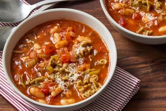

Pasta Fagioli

What Is Pasta Fagioli?
Pasta fagioli (or pasta e fagioli), which means "pasta and beans," is a traditional Italian soup.
It consists of small noodles (such as ditalini or macaroni) and cannellini beans in a seasoned tomato broth.
Store your (completely cooled) leftover pasta e fagioli in an airtight container in the fridge for up to five days.
We don't recommend freezing this soup, as the pasta will likely become unpleasantly mushy during the thawing process.
- Oil
- Vegetables
- Tomatoes
- Pasta
- Garlic
Steps
- Gather the ingredients.
- Heat olive oil in a large saucepan over medium heat. Add onion, celery, garlic, parsley, Italian seasoning, pepper flakes, and salt; cook and stir until onion is translucent, about 5 minutes.
- Stir in chicken broth, tomato sauce, and tomatoes. Reduce the heat to low and simmer for 15 to 20 minutes.
- Add pasta and cook until tender, about 10 minutes.
Home